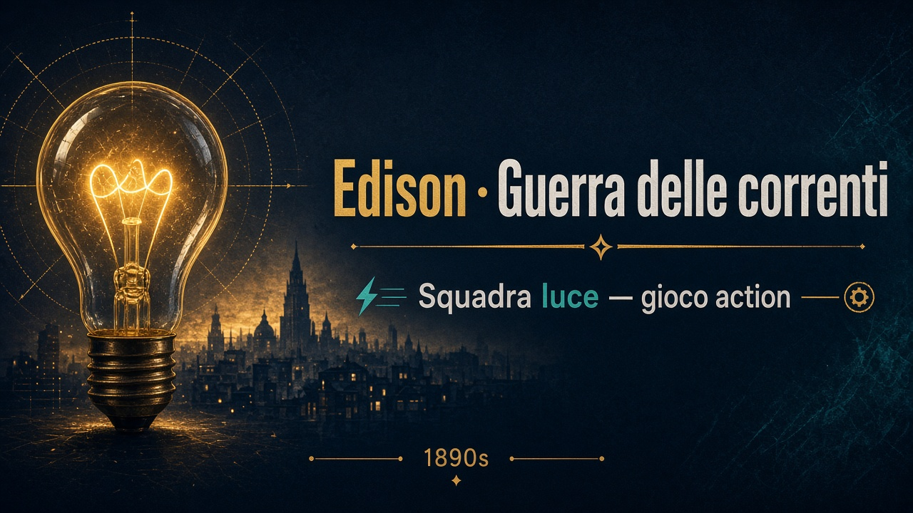

Terza e quarta professionale · Italiano / storia
Edison e la guerra delle correnti
Dopo il film Edison — L'uomo che illuminò il mondo (2017), ripassa le scene chiave con un mini-gioco action: raccogli luce e brevetti, schiva blackout e campagna mediatica.
«La luce deve durare — non solo accendersi.»

-
1 · Menlo Park
Laboratorio e lampadina che resta accesa, come nel film.
-
2 · Manhattan in CC
Illuminare la città con corrente continua e il sostegno di J.P. Morgan.
-
3 · Rifiuto a Westinghouse
Proposta di collaborazione rifiutata: nasce la guerra delle correnti.
-
4 · Tesla e corrente alternata
Nikola Tesla lascia Edison e passa a Westinghouse; CA vs CC.
-
5 · Chicago 1893
Esposizione universale: Westinghouse e Tesla illuminano la fiera.
-
6 · Kinetoscopio
Chiusura tecnologica: Edison si dedica al cinema con il kinetoscopio.
Inizia le missioni
Frecce o WASD · touch ai lati · ~75 s a missione